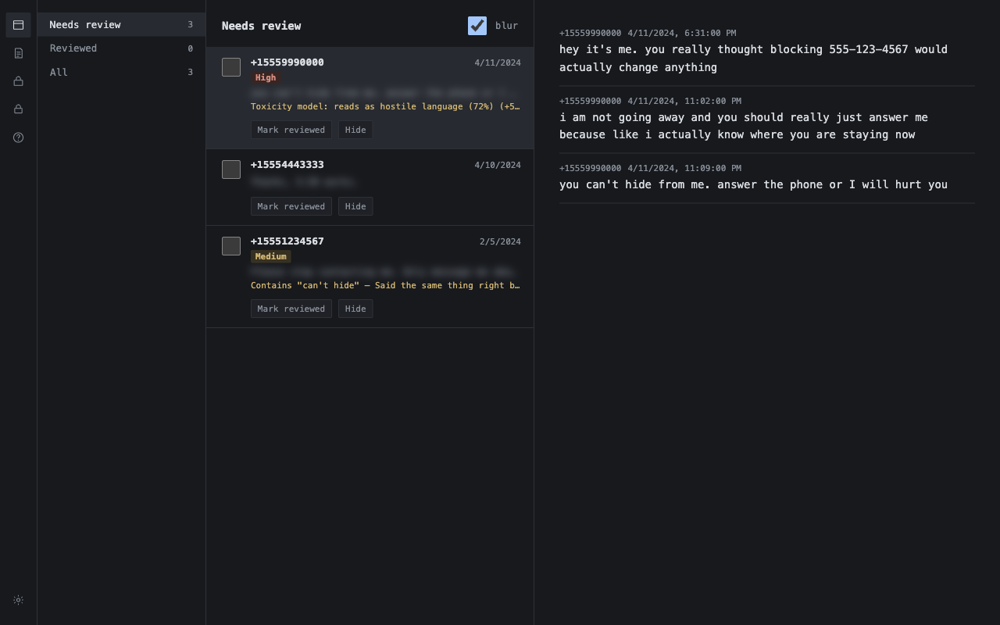
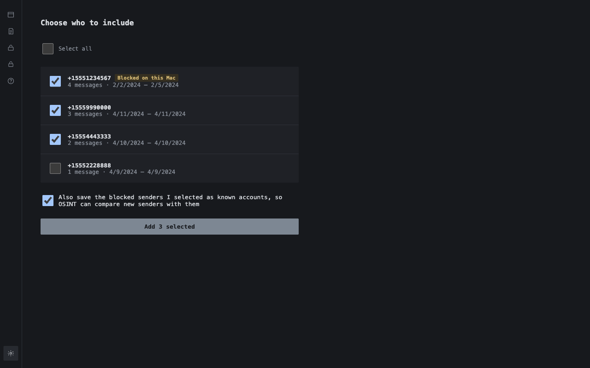
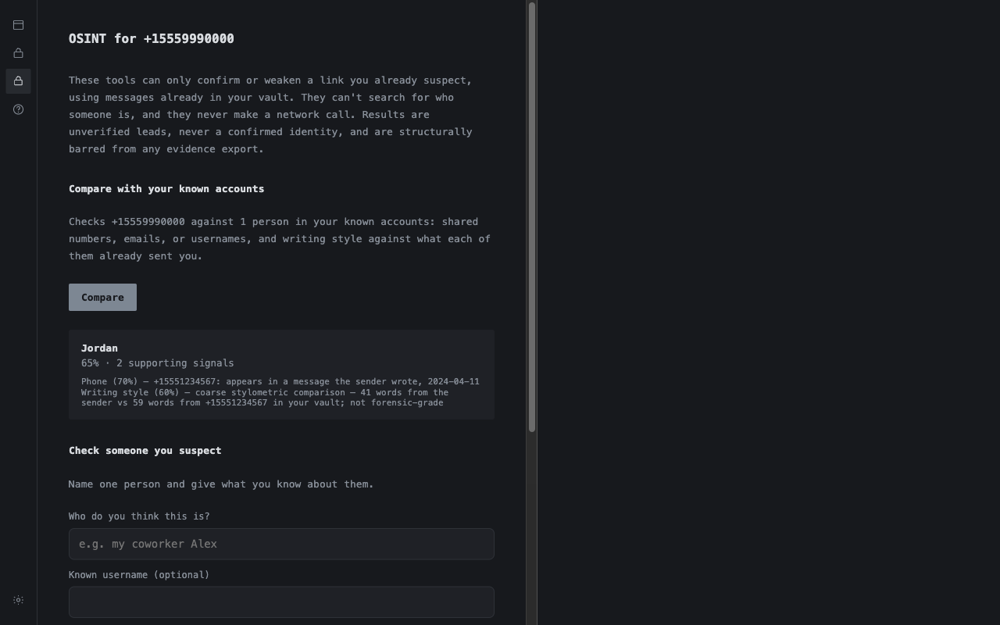
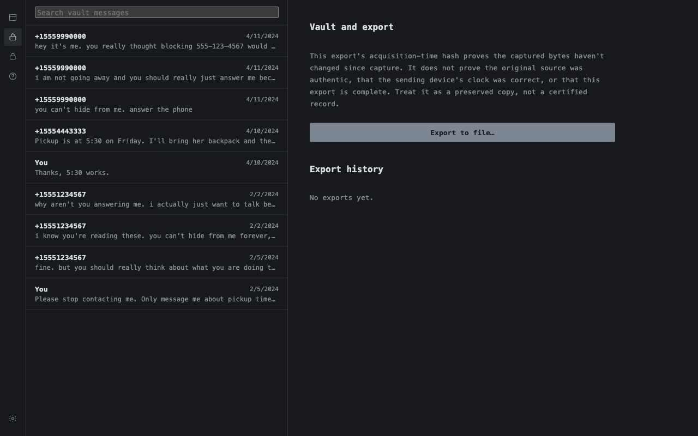

A free, local-first desktop tool for people being harassed by someone they know — an ex, a coparent, a relative, a coworker. It scores incoming messages so you don't have to read all of it yourself, preserves what you choose to keep in a form built to survive a chain-of-custody challenge, and — only when tightly gated — helps you check whether a new number or account is someone you already blocked. There's no cloud and no account: the only connection it makes is to your own email provider, if you connect email.
Screenshots from the real app with made-up demo data. No classifier model ships with the app yet, so for these the newest sender was marked as over the abuse threshold by hand. That's what turns on the High label and the OSINT check below.




Buckets incoming messages into Needs review, Reviewed, and All, so you're not reading every message from someone who's hurting you just to find the ones that matter. Previews are blurred until you choose to reveal them, full keyboard control means you never need to touch a mouse, and every flagged thread shows the actual reason — a toxicity score, or a pattern like contact after a boundary you set. Scoring runs entirely on your device — no message ever leaves it for this.
An append-only, encrypted vault preserves messages — including ones the sender tried to retract — alongside the raw source bytes and a hash taken the moment they were captured. That hash proves the bytes haven't changed since capture. It doesn't prove the message was authentic, that a clock was right, or that your export is complete — and the app says exactly that, every time, instead of a reassuring "tamper-proof" claim it can't back up.
Only unlocks for someone already flagged as abusive in your own vault. Even then, it can't look anyone up from scratch. It compares a new number or account with the people you already blocked — imported from your Mac's block list or an Instagram export — or with one candidate you name, using only messages already in your vault: a reused number or username, a matching email, a similar writing style. Every result is labeled an unverified lead, never a confirmed identity, and every check runs on your device with no network call at all. This gate is friction against casual misuse, not proof of who someone is.
LOCAL MACHINE, airgapped except where marked
│
├─ INGEST scoped to threads you pick, not your whole history
│
├─ SCORE local classifier + pattern detectors, no network
│
├─ TRIAGE neutral app name/icon, no notifications, panic-hide hotkey
│
├─ VAULT encrypted, append-only, passphrase ≠ your device login
│
└─ OSINT verify-mode today — checks a candidate you name against
your own vault data, no network call at all
Whether or not you ever use this software. These are national US services, checked against their own official pages — if you're elsewhere, search for a local equivalent.
If you're in immediate physical danger, contact local emergency services.
{kind=link}
{kind=link}
{kind=link}
{kind=link}